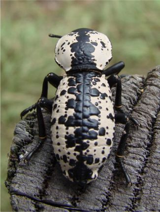
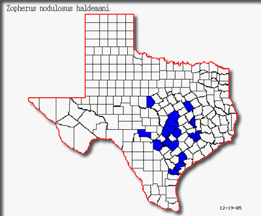

Return to Texas Entomology - Compiled by Mike Quinn
|
 |
|  |
(Plus Bee, Bosque, Burleson, Burnet, Dallas, Ellis, Hood, Menard, Kendall, Kimble, Parker, Palo Pinto & Tarrant Counties)
Primary County Record Source: E.G. Riley, Dec. 2005
Range: East-Central Texas.
Adult Activity: Starts as early as March 8 in Austin (pers. observ.) and continues as late as October.
Biology:
Adults, larvae, and pupae were once found on a Pecan tree (Taber & Fleenor, 2003). Adults have also been collected on dead Oak trees. Taber & Fleenor (2005) saw several mating pairs on an American Elm. The females appeared to be laying eggs in the bark's crevices.
Similar Species:
Triplehorn (1972) recognized a total of 19 species on Zopherus, all from the Americas, ranging from Venezuela north to the southwestern United States. Ten species occur across the southwestern United States, though none resemble Z. nodulosus.
Texas Taxa:
Zopherus concolor LeConte
Zopherus nodulosus haldemani Horn
Zopherus xestus Triplehorn
Photos:
Darken individual - BugGuide.net
Animated Video - Logo - Southwestern Entomologists
Jeweled Zopherus chilensis - Beetles are occasionally employed as 'living jewelry' in Mexico - University of Michigan
Etymology:
Zopherus nodulosus haldemani Horn
zopher (G). Dusky, gloomy; darkness
nodulus (L). A little knot
haldemani = patronym, see biography
Biography:
Samuel Stehman Haldeman (1812 – 1880) - Wikipedia
Horace Haldeman (1820 – 1883) - Horace R. Burke, Handbook of TexasGeorge Henry Horn (1840-1897) - WikipediaHorace Haldeman was one of the first persons to concentrate on collecting insects in Texas. He sent his specimens, mostly beetles, to his entomologist brother, Samuel S. Haldeman, and a noted coleopterist, John L. LeConte, for description.
References:
Arnett, R.H., Jr., M.C. Thomas, P. E. Skelley & J.H. Frank. (editors). 2002. American Beetles, Volume II: Polyphaga: Scarabaeoidea through Curculionoidea. CRC Press LLC, Boca Raton, FL. xiv + 861 pp.
Borror, D.J. 1960. Dictionary of Word Roots and Combining Forms. National Press Books, Palo Alto. v + 134 pp.
Burke, H.R. 1976. The beetle Zopherus nodulosus haldemani Symbol of the Southwestern Entomological Society. Southwestern Entomologist 1:105-106.
Burke, H.R. 1977. Horace Haldeman, Early Insect Collector in Texas. Melsheimer Entomological Series No. 22: 1-6.
Taber, S.W. & S.B. Fleenor. 2003. Insects of the Texas Lost Pines. Texas A&M University, College Station. 283 pp.
Taber, S.W. & S.B. Fleenor. 2005. Invertebrates of Central Texas Wetlands. Texas Tech University Press, Lubbock. 309 pp.
Triplehorn, C.A. 1972. A Review of the Genus Zopherus of the World (Coleoptera: Tenebrionidae) Smithsonian Contributions to Zoology, 108:1-24.
20 Apr. 2017
© Mike Quinn / entomike@gmail.com / Texas
Entomology / Texas
Beetles / Photo Techniques
{kind=link}
{kind=link}
{kind=link}